Услуги
- Описание услуг
- Типы услуг: авиаперелет, отель, виза, трансфер, страховка и доп. услуги
- Добавление услуг
- Удаление услуг
Каждый тур в программе представляется набором услуг следующих типов:
- авиаперелет,
- отель,
- виза,
- трансфер,
- страховка,
- дополнительная услуга (экскурсия, ужин и т.д.)
В заявку можно добавить любое количество услуг каждого типа. Таким образом, можно составлять
произвольные пакетные, экскурсионные и индивидуальные туры.
Описание услуг
Для каждой услуги указываются:
- период оказания услуги
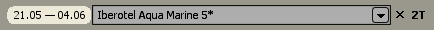 - описание
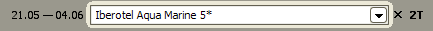 - туристы, для которых услуга оказывается
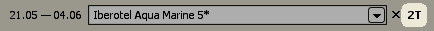
По умолчанию период оказания услуги совпадает с датами тура. Чтобы изменить период для определенной
услуги нажмите кнопкой мыши на одну из дат и в появившемся календаре выберите другой день.
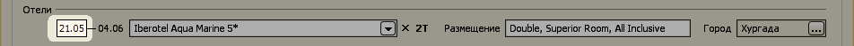
Описание услуги можно выбрать из списка ранее введенных в предыдущих заявках описаний
для той же страны, нажав на кнопку выбора из списка.
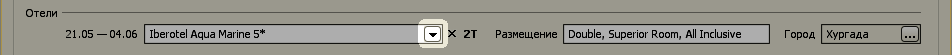
Для определенных типов услуг помимо описания можно указать дополнительные параметры, зависящих от
типа услуги:
- для авиаперелета: класс, авиакомпания (а/к), номер рейса, время вылета и прилета;
- для отеля: размещение и город;
- для визы: срок и статусы подачи документов;
- для трансфера: тип трансфера (групповой или индивидуальный).
Авиаперелет
Для услуги Авиаперелет поддерживаются 2 режима детализации: упрощенный и детализированный.
В первом случае в поле описания указывается полный маршрут перелета (например, "Москва - Рим - Москва"),
класс и авиакомпания.
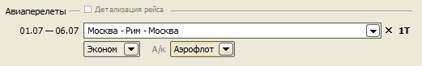
Во втором случае вводится информация для каждого рейса, совершаемого во время тура: маршрут, класс, авиакомпания, номер рейса, время вылета, время прилета, аэропорты вылета и прилета.
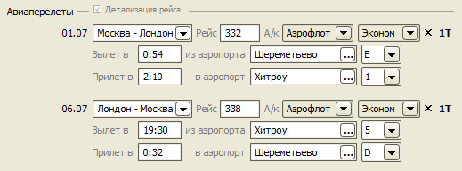
Чтобы включить детализированный режим нажмите кнопку-переключатель, показанную на следующем рисунке.
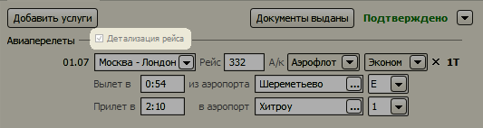
При следующем открытии заявки, поля услуги Авиаперелет будут заменены надписями для экономии пространства экрана. Если нужно изменить данные авиаперелета, достаточно кликнуть мышью по этим надписям, и появятся поля для редактирования.
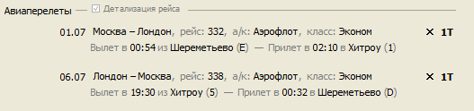
Добавление услуг
Для добавления новых услуг в тур нужно нажать на кнопку "Добавить услуги".
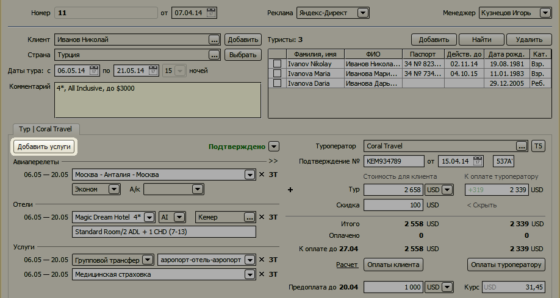
Появится список услуг.
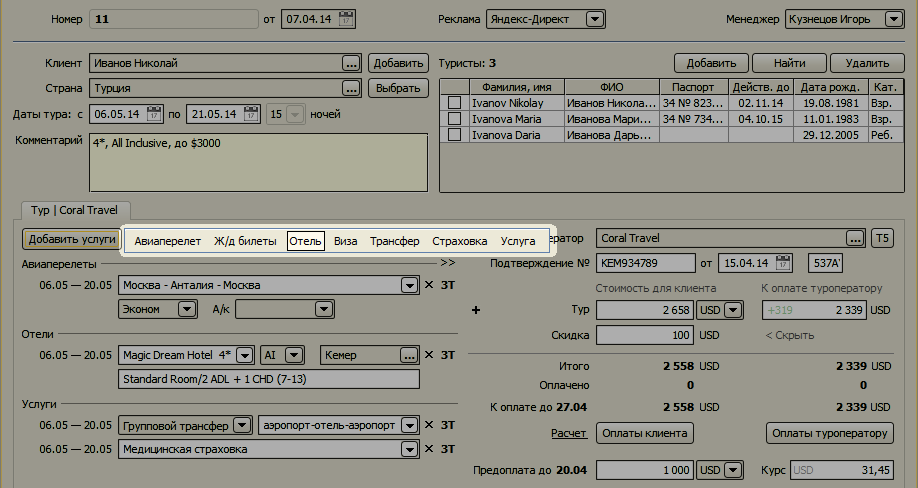
При нажатии на название услуги соответствущая услуга добавится на форму.
Удаление услуг
Чтобы удалить услугу нажмите на крестик справа от услуги и подтвердите удаление.
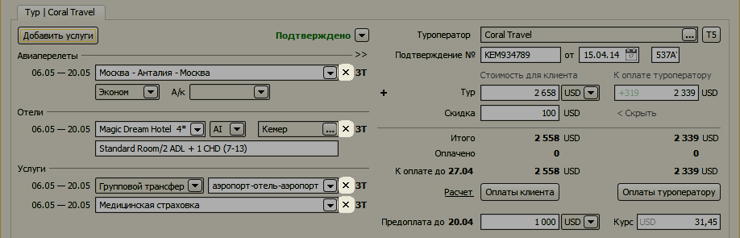
Остались вопросы? Напишите нам на e-mail